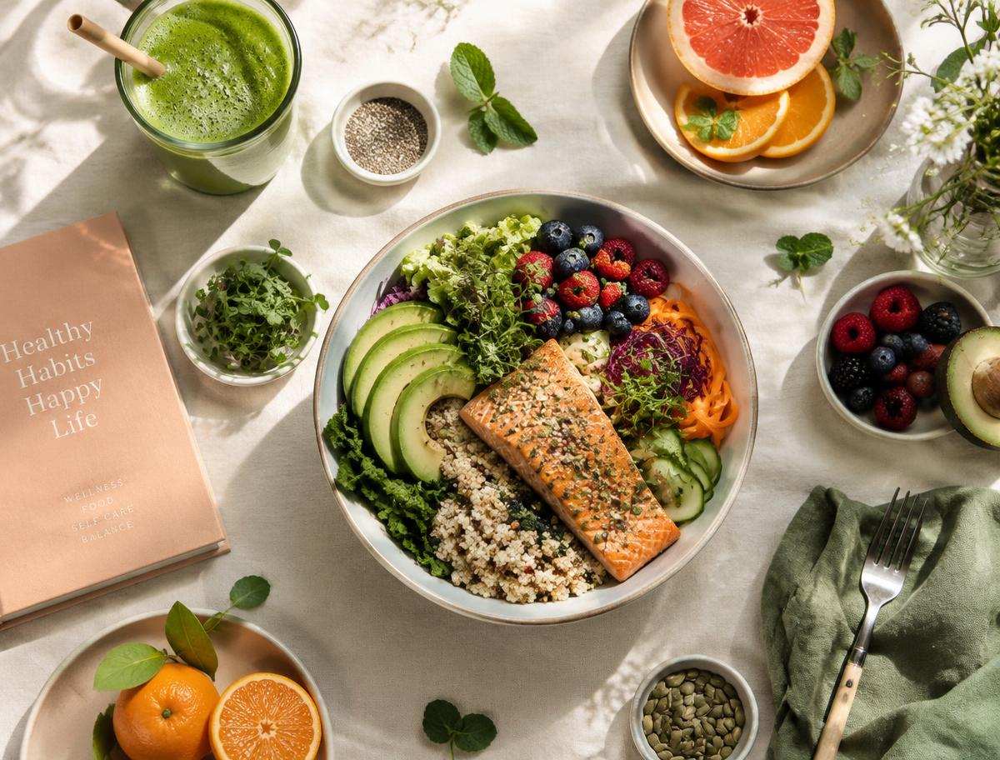

Perte de poids
Un accompagnement adapté pour avancer vers votre poids d’équilibre.
- Bilan complet
- Programme sur mesure
- Suivi régulier
Nutrition & bien-être · Tunis
Dalel Staali Bel Hadj
Nutritionniste Diététicienne · أخصائية تغذية
Centre Urbain Nord, Tunis
Une écoute attentive. Un accompagnement à votre rythme.
Les consultations
Une approche personnalisée, au service de votre santé et de votre bien-être.
Un accompagnement adapté pour avancer vers votre poids d’équilibre.
Retrouvez des habitudes alimentaires équilibrées, sans renoncer au plaisir.
Une alimentation adaptée à chaque étape de la vie, pour les petits et les grands.
Des conseils nutritionnels personnalisés pour accompagner votre santé au quotidien.
Un soin dédié à votre bien-être et à une sensation de légèreté.
Un accompagnement corporel qui complète votre démarche de bien-être.

Healthy sans frustrationHealthy lifestyle
Manger mieux, se sentir légère et pleine d’énergie : des habitudes simples et durables, adaptées à votre quotidien.
Votre parcours
Trois étapes pour un accompagnement qui vous correspond.
Contactez le cabinet par téléphone ou sur WhatsApp pour prendre rendez-vous.
Un temps d’écoute pour comprendre vos habitudes, vos besoins et vos objectifs.
Un programme personnalisé et un suivi pour avancer ensemble, à votre rythme.
Vos témoignages
« Madame Dalel fait preuve d’un professionnalisme exemplaire et d’une écoute attentive envers ses patients. Elle prend le temps de comprendre chaque situation individuelle avant de proposer des conseils personnalisés, clairs et efficaces. »
« Je recommande vivement. Bonne continuation. »
« Bravooooo une bonne adresse »
Au plaisir de vous rencontrer